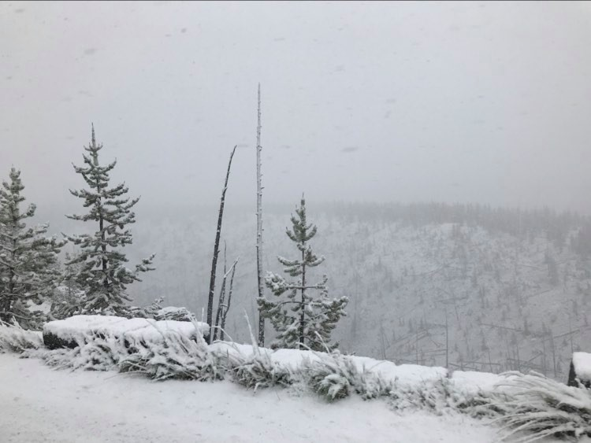
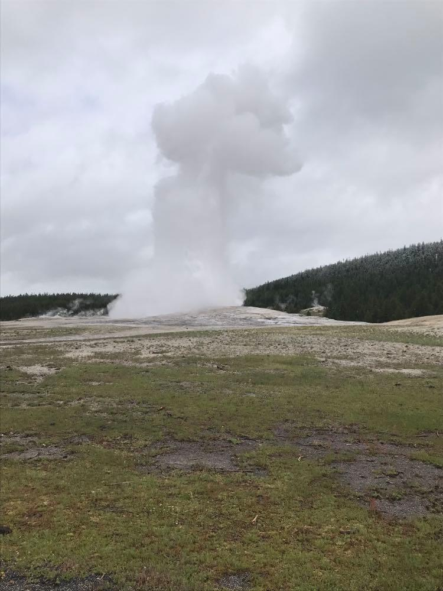
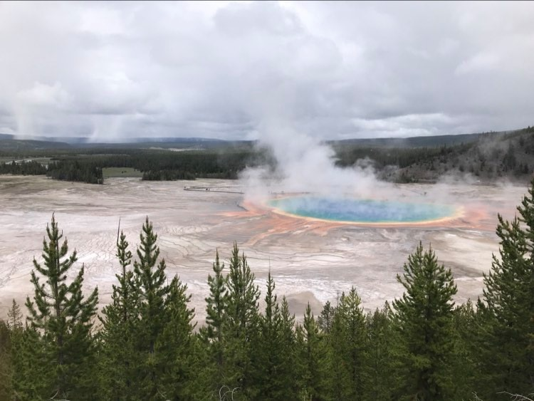

My Blog
Alright so I really didn't think through how much service I'd get but oh well I will plunge onward in writing this blog which now no one will see until who knows when.
Our day started at 5:30. I'd had this great idea to see the sunrise on the mountains and Alana was totally down with it. Unfortunately, when we dragged ourselves out of our tent with the promise of a view there was nothing due to low cloud cover. However, since we were up we took down camp and had some hot drinks. I opted for tennishoes today because Plantar fascitis sounded better than larger blisters. We had decided to do one more hike the night before because back then we could actually see the Tetons which were glorious. We hopped in the car and started driving along the way I drank my coconut water (sponsered by _insert brand name here) and because it had been so cold th night before it was perfectl chilled. It also had chunks of coconut in it which made it into more of a meal. When we got to the string lakes trail head we looked at the thermometer and looked outside 37 degrees and raining. A four mile loop didn't exactly sound pleasant. We then after 10 minutes of prepping stepped out into the weather and went to look at the picnic area and trail head sign. Despite being right at the foot of the Tetons we couldn't see any mountains and the rain wasn't all that enjoyable. Instead of a four mile hike we looked at the lake and circled the picnic area completing as we called it the String Lake Loop.
Because we were so close and there was enough service for a phone call there we drove back to Jenny Lake so I could inform my parents that I wasn't dead although my feet were/are slowly disintigrating. Because it was by now 8:00 O'clock and that meant the stores were open we went into the gift shop in search of coffee. (Alana doesn't even drink coffee but I think that it was just so cold that it sounded like a good idea). The two guys manning the store were very friendly although due to COVID we couldn't get our coffee ourselves and had to watch the guy pour it before he handed it to us so we could handle the condiments ourselves. I don't know how good the coffee actually was but it tasted like the best thing ever. We then ran across the parking lot and hopped into the car and began our drive to Yellowstone. The further North we got the colder it got. Which I guess isn't surprising but over such a short difference it kind of is. We then at te outskirts of Yellowstone hit snow. And I don't mean snow/rain I mean big fluffy pieces of snow. It continued like this almost all the way to Old Faithful. We couldn't see much else but the road for most of the drive and I think I was shocked into staying awake by the fact that we were driving along in the middle of June getting snowed on.
At Old Faithful the first order of business was to find a bathroom which was a lot harder than you would think. There were signs pointing every direction and had we tried to follow them I think they might have just led us in a circle which would have been unfortunate. After our hunt for the bathroom we made it Old Faithful with 10 minutes to spare and joined the throngs of people (who weren't for your information all six feet apart) waiting for the geyser to errupt. I spent several minutes on the phone with Dad tring to get him to use the webcam to see us before I realized that I had no idea where the webcam came from and as a result where it was and whether or not I was even in the picture. While we were waiting for the Geyser to errupt a bison tried a flanking maneouver but wasn't successful because he lost interest and found some grass instead. After watching Old Faithful errupt which is always cool we began to trek around the geyser basin. Our first stop was the Punch Bowl which is out in the middle of no where where absolutely no one goes. It's one of my favorite spots but I've seen both grizzly and bison sign as well as actual bison while going out there. Because the surrounding area is made of a chalky material you can tell exactly whats been on the trail. We were both pretty on edge but we go our picture and then headed back
We walked along the boardwalks peering a geysers and looking into pools. The fact that there never seems to be a bottom used to be cool but it now kind of freaks me out a little bit maybe because I've spent too much time thinking about horror films that could be located in Yellowstone maybe because the fact that these pools just keep going down is a little freaky. We were stopped by some ladies and she "asked" if I could take a picture of them. And by asked I mean she shoved the phone into my hand. Then we proceeded to have a photo shoot. "Could you go a little higher," "A little to the left sweety", "Hon could you do some landscapes," "wait I need the make-up artist to do a touch up" Okay not the last one but you get the point. She then asked us where we were from and doing the polite thing I asked it back but as I was doing so several things clicked in my head. The southern accent, the style of hair, the hat that had Texas written on it in giant letters. And so when she responded I wasn't at all surprised by her answer. We continued along and hiked up to the observation point which I discovered last time I went and is one of my most favorite places in the entire park. We got up there just in time to watch Old Faithful errupt again and it was pretty spectacular to see it from up above. We finished the geyser basin in silence because we were both getting pretty hangry because we skipped breakfast and had coffee
Before going back to the car we went and peered in the Inn windows. It was really sad to see it closed and empty. (For those of you who might be interested it is closed for the season) We ate in the car and I don't think we spoke a word until we were finished. Then feeling more human we did the natural thing and had a snack. I think we've decided that White Cheddar Popcorn secretly has crack in it because we downed almost an entire bag in one sitting. We drove to Biscuit Basin expecting to see battling bison battling bleary bears who bought baking babboons but alas we only saw geysers and hot springs (yawn) Who am I kidding it was awesome. We actually did the over look for Grand Prismatic springs which I'd never done before and that was a pretty sweet view. The hike was supposed to be 2 miles but considering we did the entire thing in 30 minutes either we are hiking inhumanly fast or the trail sign lied. We tried to go to Midway Basin (home of Grand Prismatic Spring) but we ended up taking a rain check because of the line of car waiting to get into the parking lot. We instead looked at the paint/mud pots in upper basin. I'm not sure how far we hiked today but I think we did several miles and they were just disguised better than a straight hike. Thankfully, my blisters didn't have grandchildren or really let themselves go. On our way back we stopped at midway geyser basin and parked way out to ensure that we wouldn't have to wait. We then slogged 1/2 mile through the woods to get to the basin for the sole purpous of looking at something other than the Grand Prismatic Springs. We then turned around and left. Of course there was no longer a line of cars and our car was parked ridicuoulsy far away from anyone elses car.
It didn't snow on our way back south and we listened to broadway and soundtracks on the way back down. Any day that I can sing something that isn't in my range is a good day for me but probably a bad day for everyone else. At the place we were staying there were supposed Hot springs. The check in man said that they were just down the road and you couldn't miss them. After driving 20 minutes down the road we came to the conclusion we had missed them. Driving back we ran into a little sign with a very confusing map detailing how to get to the Hot springs. It's almost like they didn't want us to find them. After studying the map and gaining a relatively decent idea of where the closest hot springs was he begain to walk. Unfortunately there was a creek in our way and no bridge. However, I was committed enough to the cause that I stripped off my shoes (they were hurting my feet anyways), rolled up my pants, and marched across. It went up to my thighs and Alana held off until I found something which I didn't so I came back and we explored along the creek looking for hotsprings. Not too far along we looked across and found the hot springs. This then resulted in us walking back to where I had previously forded and going across again. This time Alana came although she didn't bother with taking of her shoes-they'd gotten fairly muddy or rolling up her pants. When we reached the hotsprings there were some people there but they were getting ready to leave and he got out and went to the lower pool to begin to extract his son which took the entire time we were there. What had been done was that the water flowing out of the hot springs (we weren't aloud in that at all" had been dammed to make a pool. There was one below which is where the guy was trying to remove his son from.
Nothing has ever felt so good in my life. I've been in Montana a while and most hot springs are pretty commercial but this was about as natural as you could get. We were sitting in a pool that had been made only by using some rock stairing out at the Tetons. There was absolutely no one else in our pool except perhaps the protists that supposedly could get in my brain through my nose. I didn't submerge my head in case you were wondering. Although I did rinse my hair and as a result I still haven't had to shower which is a definite win in my books. So that was incredibly cool. The rest of the evening was pretty quite I made dinner (Chicken'n Dumplings-which is my favorie, and curry of some sort for Alana) and Alana hung a clothes line. My feet aren't feeling great now that I've cut up the bottom of them on some rocks but I'm still moving. Tomorrow we are headed over to the Grand Canyon of Yellowstone which should be fun although I think there is a hike planned and another small part of me just died inside. Ahh well this has been pretty epic all in all.
When this will get posted I do not know
-Claire